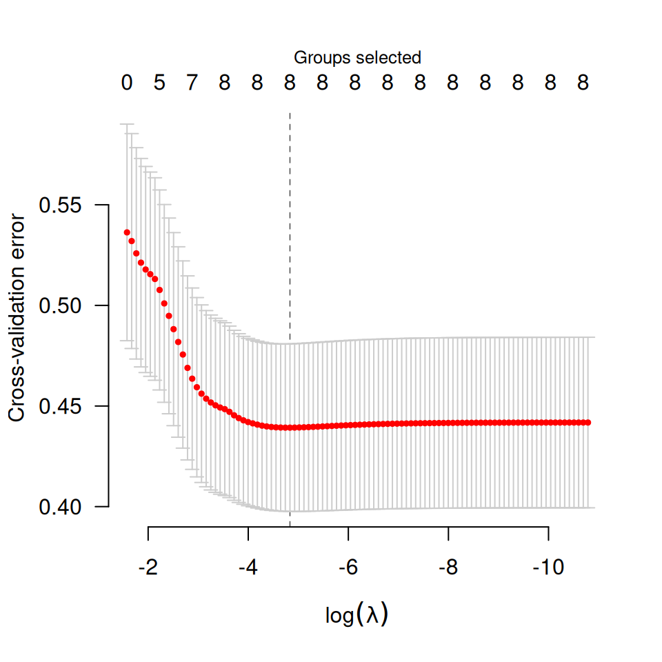
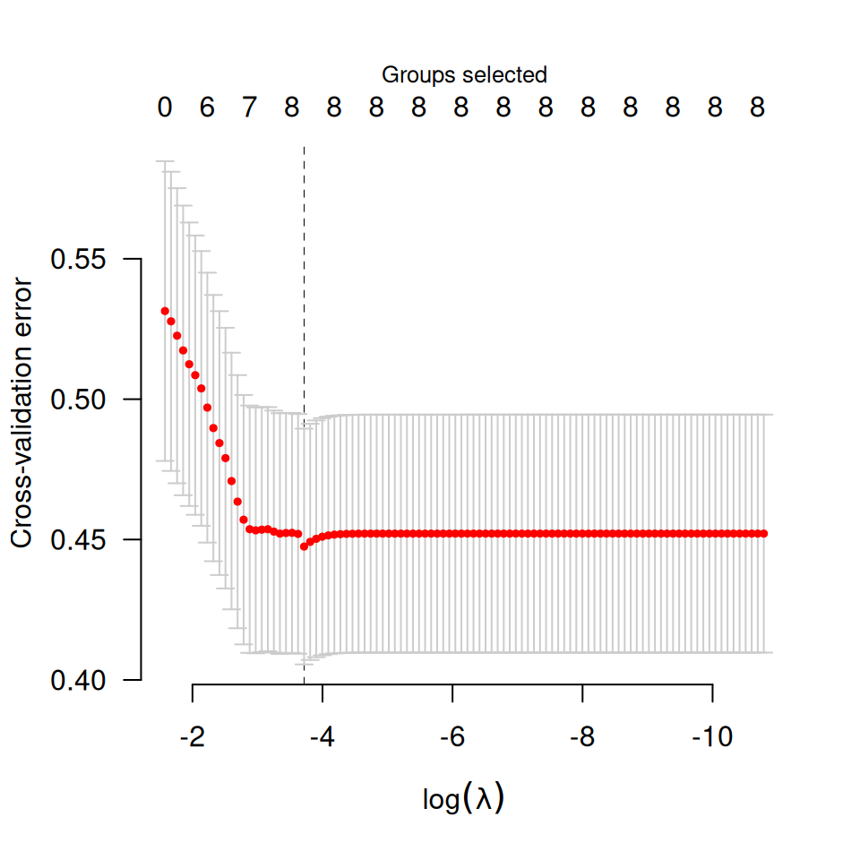

Performs k-fold cross validation for penalized regression models with grouped covariates over a grid of values for the regularization parameter lambda.
Arguments
- X
- y
- group
- ...
- nfolds
The number of cross-validation folds. Default is 10.
- seed
You may set the seed of the random number generator in order to obtain reproducible results.
- fold
Which fold each observation belongs to. By default the observations are randomly assigned.
- returnY
Should cv.grpreg()/cv.grpsurv() return the fitted values from the cross-validation folds? Default is FALSE; if TRUE, this will return a matrix in which the element for row i, column j is the fitted value for observation i from the fold in which observation i was excluded from the fit, at the jth value of lambda. NOTE: For
cv.grpsurv(), the rows ofYare ordered by time on study, and therefore will not correspond to the original order of observations pased tocv.grpsurv.- trace
If set to TRUE, cv.grpreg will inform the user of its progress by announcing the beginning of each CV fold. Default is FALSE.
- se
For
cv.grpsurv(), the method by which the cross-valiation standard error (CVSE) is calculated. The 'quick' approach is based on a rough approximation, but can be calculated more or less instantly. The 'bootstrap' approach is more accurate, but requires additional computing time.
Value
An object with S3 class "cv.grpreg" containing:
- cve
The error for each value of
lambda, averaged across the cross-validation folds.- cvse
The estimated standard error associated with each value of for
cve.- lambda
The sequence of regularization parameter values along which the cross-validation error was calculated.
- fit
The fitted
grpregobject for the whole data.- fold
The fold assignments for cross-validation for each observation; note that for
cv.grpsurv, these are in terms of the ordered observations, not the original observations.- min
The index of
lambdacorresponding tolambda.min.- lambda.min
The value of
lambdawith the minimum cross-validation error.- null.dev
The deviance for the intercept-only model.
- pe
If
family="binomial", the cross-validation prediction error for each value oflambda.
Details
The function calls grpreg() or grpsurv() nfolds times, each
time leaving out 1/nfolds of the data. The cross-validation error is
based on the deviance;
see here for more details.
For Gaussian and Poisson responses, the folds are chosen according to simple
random sampling. For binomial responses, the numbers for each outcome class
are balanced across the folds; i.e., the number of outcomes in which
y is equal to 1 is the same for each fold, or possibly off by 1 if
the numbers do not divide evenly. This approach is used for Cox regression
as well to balance the amount of censoring cross each fold.
For Cox models, cv.grpsurv uses the approach of calculating the full
Cox partial likelihood using the cross-validated set of linear predictors.
Other approaches to cross-validation for the Cox regression model have been
proposed in the literature; the strengths and weaknesses of the various
methods for penalized regression in the Cox model are the subject of current
research. A simple approximation to the standard error is provided,
although an option to bootstrap the standard error (se='bootstrap')
is also available.
As in grpreg(), seemingly unrelated regressions/multitask learning can
be carried out by setting y to be a matrix, in which case groups are
set up automatically (see grpreg() for details), and
cross-validation is carried out with respect to rows of y. As
mentioned in the details there, it is recommended to standardize the
responses prior to fitting.
Examples
data(Birthwt)
X <- Birthwt$X
y <- Birthwt$bwt
group <- Birthwt$group
cvfit <- cv.grpreg(X, y, group)
plot(cvfit)

summary(cvfit)
#> grLasso-penalized linear regression with n=189, p=16
#> At minimum cross-validation error (lambda=0.0080):
#> -------------------------------------------------
#> Nonzero coefficients: 16
#> Nonzero groups: 8
#> Cross-validation error of 0.44
#> Maximum R-squared: 0.17
#> Maximum signal-to-noise ratio: 0.20
#> Scale estimate (sigma) at lambda.min: 0.663
coef(cvfit) ## Beta at minimum CVE
#> (Intercept) age1 age2 age3 lwt1 lwt2
#> 3.044490766 -0.011903110 1.429405469 0.830865167 1.721770019 -0.001171222
#> lwt3 white black smoke ptl1 ptl2m
#> 1.252330094 0.277824567 -0.138527669 -0.267472875 -0.277700649 0.193007108
#> ht ui ftv1 ftv2 ftv3m
#> -0.522415974 -0.463194421 0.073062346 0.022384572 -0.126538346
cvfit <- cv.grpreg(X, y, group, penalty="gel")
plot(cvfit)

summary(cvfit)
#> gel-penalized linear regression with n=189, p=16
#> At minimum cross-validation error (lambda=0.0243):
#> -------------------------------------------------
#> Nonzero coefficients: 15
#> Nonzero groups: 8
#> Cross-validation error of 0.45
#> Maximum R-squared: 0.15
#> Maximum signal-to-noise ratio: 0.18
#> Scale estimate (sigma) at lambda.min: 0.669